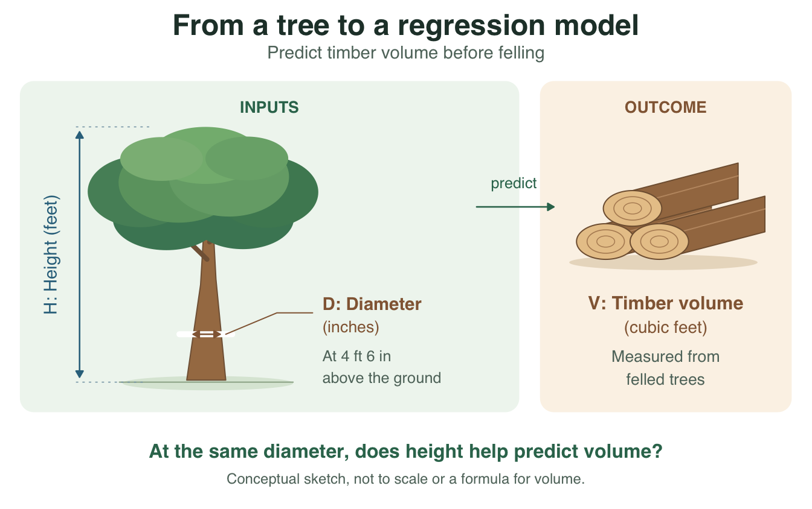
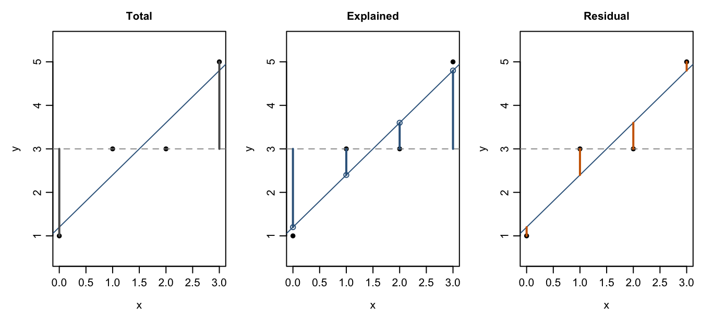
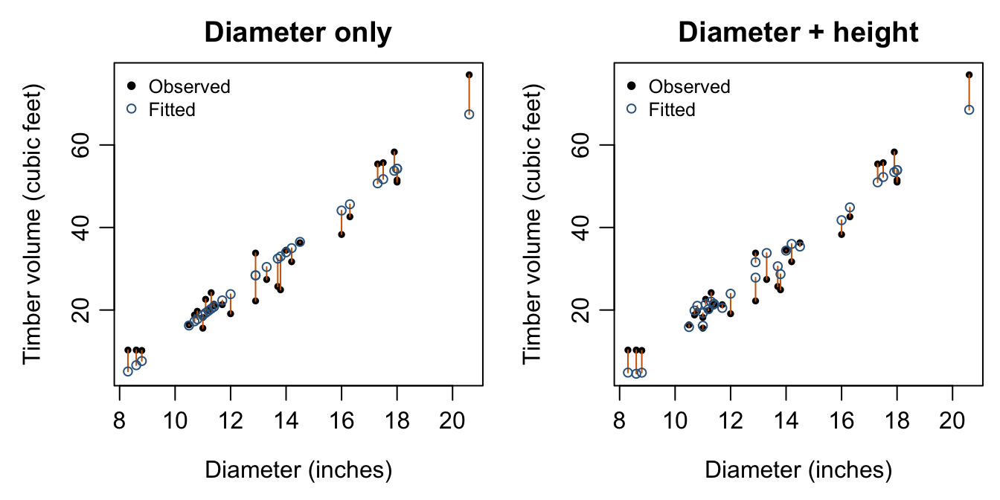

4 Model Comparison, Partial F Tests, and ANOVA
In this chapter, we study the ANOVA decomposition for linear regression, the overall significance test, and the comparison of nested models. These ideas connect the geometry of least squares with the inferential tools developed in earlier chapters.
Learning Objectives
By the end of this chapter, students should be able to:
- define the total, regression, and error sums of squares;
- explain the ANOVA decomposition in regression with an intercept;
- interpret the degrees of freedom associated with SST, SSR, and SSE;
- perform the overall \(F\) test for regression;
- compare nested linear models using extra sums of squares;
- interpret ANOVA tables produced by statistical software.
Reading
Recommended reading for this chapter:
- Seber and Lee:
- sections on analysis of variance in regression
- sums of squares and decomposition of variability
- tests for nested models
- Montgomery, Peck, and Vining:
- sections on the ANOVA table
- overall model significance
- partial and sequential sums of squares
NoteMotivation: does measuring tree height add useful information?
Suppose a forestry team wants to estimate timber volume before felling a tree. Diameter is already available; measuring height requires additional effort. Does height contribute information beyond diameter?
The real trees dataset in R lets us explore this question with measurements on 31 felled black cherry trees. Consider three candidate mean models:
| Model | Information used | Mean volume |
|---|---|---|
| \(M_0\) | No tree measurements | \(\beta_0\) |
| \(M_1\) | Diameter | \(\beta_0+\beta_1\,\mathrm{Diameter}\) |
| \(M_2\) | Diameter and height | \(\beta_0+\beta_1\,\mathrm{Diameter}+\beta_2\,\mathrm{Height}\) |
Discuss before calculating: Which comparison answers whether height adds information? Why is choosing the smallest training SSE insufficient? Keep these questions in mind; the optional data example below returns to them with fitted models.
Review of the Linear Model
Recall the normal linear model
\[ \mathbf{Y} = \mathbf{X}\boldsymbol{\beta} + \boldsymbol{\varepsilon}, \qquad \boldsymbol{\varepsilon} \sim N_n(\mathbf{0}, \sigma^2 \mathbf{I}_n). \]
When \(\mathbf{X}\) has full column rank, the ordinary least squares estimator is
\[ \hat{\boldsymbol{\beta}} = (\mathbf{X}^\top \mathbf{X})^{-1}\mathbf{X}^\top \mathbf{Y}, \]
and the fitted values are
\[ \hat{\mathbf{Y}} = \mathbf{X}\hat{\boldsymbol{\beta}}. \]
The residual vector is
\[ \mathbf{e} = \mathbf{Y} - \hat{\mathbf{Y}}. \]
From Chapter 2, we know that \(\hat{\mathbf{Y}}\) and \(\mathbf{e}\) are orthogonal. From Chapter 3, we know that this leads to useful distributional results for inference. In this chapter, we organize these ideas into the ANOVA framework.
Vector notation. Following the convention used in this course, \(\mathbf a=(a_1,a_2,a_3)\) denotes a column vector, while \(\mathbf a^\top=(a_1\;a_2\;a_3)\) denotes a row vector. Commas distinguish the column-vector tuple; spaces separate entries of the row vector.
4.1 Total, Explained, and Unexplained Variation
A central question in regression is: How much of the variation in the response can be explained by the model? To answer this, we decompose the total variation in \(\mathbf{Y}\) into:
- variation explained by regression;
- variation left unexplained by the model.
When the model includes an intercept, this decomposition takes a particularly simple and important form.
Definition 4.1 (Regression Sums of Squares) For an OLS fit with an intercept, let \(\bar Y=n^{-1}\sum_{i=1}^nY_i\), \(\hat{\mathbf Y}=\mathbf X\hat{\boldsymbol\beta}\), and \(\mathbf e=\mathbf Y-\hat{\mathbf Y}\). Define the total, error, and regression sums of squares by
\[ \begin{aligned} \mathrm{SST}&=\sum_{i=1}^n(Y_i-\bar Y)^2 =\|\mathbf Y-\bar Y\mathbf 1\|^2,\\ \mathrm{SSE}&=\sum_{i=1}^n(Y_i-\hat Y_i)^2 =\mathbf e^\top\mathbf e,\\ \mathrm{SSR}&=\sum_{i=1}^n(\hat Y_i-\bar Y)^2 =\|\hat{\mathbf Y}-\bar Y\mathbf 1\|^2. \end{aligned} \]
SST measures variation around the sample mean; SSE measures deviations from the fitted model; SSR measures how much the fitted values vary around the sample mean. These are definitions. Their additive relationship below follows from OLS orthogonality and the inclusion of an intercept.
Theorem 4.1 (ANOVA Decomposition with an Intercept) For an ordinary least squares fit whose design matrix contains an intercept,
\[ \mathrm{SST}=\mathrm{SSR}+\mathrm{SSE}. \]
The centered fitted vector \(\hat{\mathbf Y}-\bar Y\mathbf 1\) is orthogonal to the residual vector \(\mathbf e\). Thus total variation around the sample mean splits into explained variation and residual variation. This geometric identity does not require normal errors.
Why the Decomposition Holds
The key reason is orthogonality. We can write
\[ \mathbf{Y} - \bar{Y}\mathbf{1} = (\hat{\mathbf{Y}} - \bar{Y}\mathbf{1}) + (\mathbf{Y} - \hat{\mathbf{Y}}). \]
That is,
\[ \mathbf{Y} - \bar{Y}\mathbf{1} = (\hat{\mathbf{Y}} - \bar{Y}\mathbf{1}) + \mathbf{e}. \]
Because the model contains an intercept, the vector \(\bar{Y}\mathbf{1}\) lies in the column space of \(\mathbf{X}\). Hence both \(\hat{\mathbf{Y}}\) and \(\bar{Y}\mathbf{1}\) lie in the model space, so their difference also lies in the model space. Since the residual vector \(\mathbf{e}\) is orthogonal to the model space, we have
\[ (\hat{\mathbf{Y}} - \bar{Y}\mathbf{1})^\top \mathbf{e} = 0. \]
Therefore, by the Pythagorean theorem,
\[ \|\mathbf{Y} - \bar{Y}\mathbf{1}\|^2 = \|\hat{\mathbf{Y}} - \bar{Y}\mathbf{1}\|^2 + \|\mathbf{e}\|^2, \]
which is exactly
\[ \mathrm{SST} = \mathrm{SSR} + \mathrm{SSE}. \]
Exercise 4.1 (In-Class Discussion: Why Does the Intercept Matter?) Why does the usual centered decomposition \(\mathrm{SST}=\mathrm{SSR}+\mathrm{SSE}\) require the model space to contain the constant vector? Which step could fail without an intercept? Does this identity require normal errors?
Solution 4.1. With an intercept, \(\mathbf 1\) and therefore \(\bar Y\mathbf 1\) belong to the model space. Thus the centered fitted vector \(\hat{\mathbf Y}-\bar Y\mathbf 1\) is orthogonal to \(\mathbf e\), and the cross term vanishes when its squared norm is expanded. Without a constant vector in the model space, \(\sum_i e_i\) need not be zero, so the cross term \(\mathbf e^\top(\hat{\mathbf Y}-\bar Y\mathbf 1)=-\bar Y\sum_i e_i\) need not vanish. The identity follows from OLS geometry, not normality.
Exercise 4.2 (In Class: One Observation, Three Deviations) For one observation, \(y_i=1\), \(\hat y_i=1.2\), and \(\bar y=3\). In one minute, identify the total, explained, and residual deviations. Does the squared total deviation equal the sum of the other two squared deviations for this observation?
Solution 4.2. The deviations are \(y_i-\bar y=-2\), \(\hat y_i-\bar y=-1.8\), and \(y_i-\hat y_i=-0.2\). They add as signed deviations: \(-2=-1.8-0.2\). Their squares do not add: \(4\ne3.24+0.04\). The ANOVA identity holds after summing over all observations because the fitted and residual vectors are orthogonal; it is not a point-by-point identity for squared deviations.
Degrees of Freedom
The ANOVA decomposition is accompanied by a decomposition of degrees of freedom. When the model includes an intercept and \(\mathbf{X}\) has rank \(p\), we have:
- total degrees of freedom: \(n-1\);
- regression degrees of freedom: \(p-1\);
- error degrees of freedom: \(n-p\).
Thus,
\[ n-1 = (p-1) + (n-p). \]
These match the sum of squares decomposition:
\[ \mathrm{SST} = \mathrm{SSR} + \mathrm{SSE}. \]
Definition 4.2 (Regression and Error Mean Squares) A mean square is a sum of squares divided by its associated degrees of freedom. For a full-rank regression design with an intercept and \(1<p<n\), define
\[ \mathrm{MSR}=\frac{\mathrm{SSR}}{p-1},\qquad \mathrm{MSE}=\frac{\mathrm{SSE}}{n-p}. \]
Here \(p\) includes the intercept coefficient.
Dividing by degrees of freedom accounts for the different dimensions contributing to each sum of squares. Under the linear-model moment assumptions from Chapter 3, MSE is an unbiased estimator of \(\sigma^2\). MSR estimates the same noise level under the overall null hypothesis, which motivates their ratio.
4.2 The Overall F Test
A major inferential question is whether the regression model provides any explanatory power beyond the intercept-only model. Suppose the model includes an intercept and \(p-1\) additional predictors. The null hypothesis is
\[ H_0: \beta_1 = \beta_2 = \cdots = \beta_{p-1} = 0, \]
where \(\beta_0\) is the intercept and \(p\) counts all regression coefficients. Equivalently, under \(H_0\), the mean response does not depend on the predictors. The alternative is that at least one non-intercept coefficient is nonzero.
Theorem 4.2 (Overall F Test) Under the normal linear model with a fixed, full-rank design containing an intercept and \(1<p<n\), the null hypothesis that all non-intercept coefficients are zero gives
\[ F=\frac{\mathrm{SSR}/(p-1)}{\mathrm{SSE}/(n-p)} =\frac{\mathrm{MSR}}{\mathrm{MSE}} \sim F_{p-1,n-p}. \]
Large values provide evidence against the intercept-only mean model. Exact finite-sample inference requires the normal, common-variance error assumptions; the sum-of-squares identity alone does not supply this distribution.
Interpretation of the Overall F Test
The numerator measures explained variation per regression degree of freedom. The denominator measures unexplained variation per residual degree of freedom. So the \(F\) statistic compares:
- how much signal the model explains;
- how much noise remains in the residuals.
If the predictors have no effect, then both quantities should be of similar size, and the ratio should not be unusually large. If the predictors explain substantial variation, then the numerator should be much larger than the denominator.
Exercise 4.3 (In Class: What Does an Overall Rejection Mean?) An intercept model with two predictors is fitted to \(n=25\) observations using a full-rank design. Write the overall null hypothesis and the F reference degrees of freedom under the normal linear model. How does this joint test differ from the individual t tests? If it rejects, must both individual slope tests also reject?
Solution 4.3. Here \(p=3\), so \(H_0:\beta_1=\beta_2=0\) and the reference distribution is \(F_{2,22}\). Rejection gives evidence that the two slopes are not jointly zero. It does not show that both are nonzero, and it does not require either individual test to reject at the same level. Each individual t test asks whether one slope is zero while retaining the other predictor; the overall F test asks whether both slopes are jointly zero. These are different questions, especially when predictors are correlated.
Relationship to the Intercept-Only Model
The overall \(F\) test compares two models:
- the reduced model: intercept only;
- the full model: intercept plus predictors.
Thus the ANOVA decomposition provides the basis for formal model comparison. This leads naturally to the idea of nested models.
4.3 Nested Models
Definition 4.3 (Nested Linear Models) For the same response vector and observations, let the reduced and full models have mean spaces \(\mathcal C(\mathbf X_R)\) and \(\mathcal C(\mathbf X_F)\). The models are nested when
\[ \mathcal C(\mathbf X_R)\subseteq\mathcal C(\mathbf X_F). \]
Thus every mean vector allowed by the reduced model is also allowed by the full model. A strict comparison requires ranks \(p_R<p_F\); adding columns that are linear combinations of existing columns does not enlarge the mean space.
Example 4.1 (Adding a Predictor) Consider the reduced model \(Y_i=\beta_0+\beta_1x_{i1}+\varepsilon_i\) and the full model \(Y_i=\beta_0+\beta_1x_{i1}+\beta_2x_{i2}+\varepsilon_i\). Setting \(\beta_2=0\) recovers the reduced model. If the \(x_2\) column is not in the span of the intercept and \(x_1\), the full model adds one degree of freedom.
Definition 4.4 (Extra Sum of Squares) For nested models fitted by OLS to the same response and observations, define the extra sum of squares for the full model relative to the reduced model as
\[ \mathrm{SS}_{\mathrm{extra}}=\mathrm{SSE}_R-\mathrm{SSE}_F. \]
Its associated degrees of freedom are \(p_F-p_R\), where \(p_R\) and \(p_F\) are the design-matrix ranks.
Exercise 4.4 (In-Class Discussion: Can the Larger Model Fit Worse?) Why must \(\mathrm{SSE}_F\le\mathrm{SSE}_R\) when nested models are fitted by OLS to the same observations? Must the inequality be strict whenever a genuinely new predictor direction is added?
Solution 4.4. Every fitted mean vector allowed by the reduced model is also available to the full model. Minimizing the same residual sum of squares over this larger set cannot give a larger minimum. Equality is possible even if the model space grows: for the observed response, the added directions may provide no further reduction in residual variation. Thus greater flexibility guarantees a weak improvement in training fit, not a strictly positive improvement or a useful predictor.
A positive extra sum of squares alone is not evidence against the reduced model: the F test scales that improvement by its degrees of freedom and the estimated noise variance.
Theorem 4.3 (Partial F Test for Nested Normal Linear Models) Fit both models to the same response and the same observations. Suppose their fixed design matrices have nested column spaces, with ranks \(p_R<p_F<n\), and the full model has independent \(N(0,\sigma^2)\) errors. Under the null hypothesis that the mean belongs to the reduced model,
\[ F=\frac{(\mathrm{SSE}_R-\mathrm{SSE}_F)/(p_F-p_R)}{\mathrm{SSE}_F/(n-p_F)} \sim F_{p_F-p_R,n-p_F}. \]
Large values give evidence against the reduced mean model. The numerator measures improvement per added degree of freedom; the denominator estimates the unexplained variance under the full model.
ImportantCompare the models, not just the printed p-values
Different missing-value patterns can cause two R fits to use different observations. Construct a common analysis dataset before comparing them. For one added coefficient, the partial F statistic equals the square of its two-sided t-test statistic from the full model.
Exercise 4.5 (In Class: A Better Fit, but Enough Improvement?) Two nested models use the same \(n=30\) observations. The reduced model has rank \(p_R=2\) and \(\mathrm{SSE}_R=90\); the full model has rank \(p_F=4\) and \(\mathrm{SSE}_F=78\). Compute the extra sum of squares, its degrees of freedom, the full-model MSE, and the partial F statistic. Does a reduction in SSE by itself justify rejecting the reduced model?
Solution 4.5. The improvement is \(90-78=12\) on \(4-2=2\) degrees of freedom. The full-model MSE is \(78/(30-4)=3\), so \(F=(12/2)/3=2\). Under the normal-model null, compare this with \(F_{2,26}\); the upper-tail p-value is about \(0.156\). The improvement is insufficient for rejection at the 5% level. More flexibility always weakly reduces training SSE, including when the added coefficients are zero.
Connection with General Linear Hypotheses
Nested column-space models correspond to linear restrictions on the full-model coefficients. More generally, Chapter 3 allows a specified affine restriction of the form
\[ H_0: \mathbf{C}\boldsymbol{\beta} = \mathbf{d}. \]
So the ANOVA comparison of nested models is another way of expressing the general \(F\) test from Chapter 3. In practice, this is one of the most common uses of regression ANOVA tables.
Definition 4.5 (Sequential and Partial Sums of Squares) For a term in a specified regression model, both quantities are extra sums of squares from a nested comparison on the same observations:
- Sequential sum of squares: the reduction in SSE when the term is added after the preceding terms in a specified order.
- Partial sum of squares: the increase in SSE when the specified term is removed from a full model while the other specified terms are retained.
When predictors are correlated, sequential sums of squares can depend on their order. Partial sums of squares answer a comparison conditional on the terms retained in the reduced model. With interactions or rank deficiency, state the exact restriction and respect model hierarchy rather than relying only on a Type I, II, or III label.
Definition 4.6 (Coefficient of Determination) For an OLS fit with an intercept and \(\mathrm{SST}>0\), the coefficient of determination is
\[ R^2=\frac{\mathrm{SSR}}{\mathrm{SST}} =1-\frac{\mathrm{SSE}}{\mathrm{SST}}. \]
By the ANOVA decomposition, \(R^2\) lies between 0 and 1 and measures the proportion of centered variation explained by the fitted model. If every observed response is identical, \(\mathrm{SST}=0\) and this ratio is undefined.
Interpretation of R Squared
- If \(R^2\) is close to 1, the model explains a large proportion of the variation in the response.
- If \(R^2\) is close to 0, the model explains little of the variation.
However, \(R^2\) alone does not guarantee that the model is appropriate. A high \(R^2\) does not ensure that assumptions are satisfied, and a low \(R^2\) does not necessarily imply the model is useless.
Definition 4.7 (Adjusted Coefficient of Determination) For an OLS fit with an intercept, \(\mathrm{SST}>0\), and design rank \(p<n\), define the adjusted coefficient of determination as
\[ R^2_{\mathrm{adj}} =1-\frac{\mathrm{SSE}/(n-p)}{\mathrm{SST}/(n-1)}. \]
Ordinary \(R^2\) cannot decrease when the model space is enlarged on the same data. Adjusted \(R^2\) accounts for the loss of residual degrees of freedom and can decrease or become negative. It compares residual mean square with the sample variance of the response; it is not a literal proportion of explained variation or an estimate of out-of-sample predictive performance.
Example 4.2 (A Small ANOVA Calculation) For the column vectors \(\mathbf x=(0,1,2,3)\) and \(\mathbf y=(1,3,3,5)\), the fitted line is \(\hat y=1.2+1.2x\). Therefore \(\hat{\mathbf y}=(1.2,2.4,3.6,4.8)\), \(\mathbf e=(-0.2,0.6,-0.6,0.2)\), and \(\bar y=3\).
\[ \begin{aligned} \mathrm{SST}&=(1-3)^2+(3-3)^2+(3-3)^2+(5-3)^2=8,\\ \mathrm{SSE}&=(-0.2)^2+0.6^2+(-0.6)^2+0.2^2=0.8,\\ \mathrm{SSR}&=\mathrm{SST}-\mathrm{SSE}=8-0.8=7.2. \end{aligned} \]
Here \(n=4\) and \(p=2\), so the regression, residual, and total degrees of freedom are 1, 2, and 3, respectively.
| Source | Sum of squares | df | Mean square | F |
|---|---|---|---|---|
| Regression | 7.2 | 1 | 7.2 | 18 |
| Error | 0.8 | 2 | 0.4 | |
| Total | 8.0 | 3 |
The model has \(R^2=7.2/8=0.9\), yet the F-test p-value is \(P(F_{1,2}\ge18)\approx0.0513\). With only two residual degrees of freedom, a high training \(R^2\) does not automatically give evidence at the 5% significance level.
Exercise 4.6 (In Class: Can Two Fit Summaries Disagree?) For the same \(n=10\) observations with \(\mathrm{SST}=100\), an intercept model has rank 2 and SSE 20. Adding a predictor whose column is linearly independent of the existing columns increases the rank to 3 and reduces SSE to 19. Compute \(R^2\) and adjusted \(R^2\) for both fits. Did the one-unit reduction in SSE improve both summaries? Why can relying on \(R^2\) alone be misleading?
Solution 4.6. Ordinary \(R^2\) increases from \(1-20/100=0.80\) to \(1-19/100=0.81\). Adjusted \(R^2\) decreases from \(1-(20/8)/(100/9)=0.775\) to \(1-(19/7)/(100/9)\approx0.756\). The extra predictor reduces SSE but increases residual mean square, from \(2.5\) to about \(2.714\). Training \(R^2\) cannot decrease when the model space grows, even when the new term only fits noise. A high \(R^2\) also does not establish a correct mean function, appropriate error assumptions, or causality. Neither summary alone establishes better prediction on new observations.
ANOVA Table Structure
A standard regression ANOVA table has the following structure:
| Source | Sum of Squares | Degrees of Freedom | Mean Square | F |
|---|---|---|---|---|
| Regression | SSR | \(p-1\) | MSR | MSR/MSE |
| Error | SSE | \(n-p\) | MSE | |
| Total | SST | \(n-1\) |
Students should learn to move fluently between:
- formulas;
- geometric interpretation;
- software output.
4.4 R Demonstration
Fit a simple regression model
Show R code
x <- c(0, 1, 2, 3)
y <- c(1, 3, 3, 5)
fit <- lm(y ~ x)
summary(fit)
Call:
lm(formula = y ~ x)
Residuals:
1 2 3 4
-0.2 0.6 -0.6 0.2
Coefficients:
Estimate Std. Error t value Pr(>|t|)
(Intercept) 1.2000 0.5292 2.268 0.1515
x 1.2000 0.2828 4.243 0.0513 .
---
Signif. codes: 0 '***' 0.001 '**' 0.01 '*' 0.05 '.' 0.1 ' ' 1
Residual standard error: 0.6325 on 2 degrees of freedom
Multiple R-squared: 0.9, Adjusted R-squared: 0.85
F-statistic: 18 on 1 and 2 DF, p-value: 0.05132Obtain the ANOVA table
Show R code
anova(fit)Analysis of Variance Table
Response: y
Df Sum Sq Mean Sq F value Pr(>F)
x 1 7.2 7.2 18 0.05132 .
Residuals 2 0.8 0.4
---
Signif. codes: 0 '***' 0.001 '**' 0.01 '*' 0.05 '.' 0.1 ' ' 1Verify sums of squares manually
Show R code
ybar <- mean(y)
yhat <- fitted(fit)
e <- resid(fit)
SST <- sum((y - ybar)^2)
SSE <- sum(e^2)
SSR <- sum((yhat - ybar)^2)
c(SST = SST, SSR = SSR, SSE = SSE)SST SSR SSE
8.0 7.2 0.8 Show R code
SST - SSR - SSE[1] 3.330669e-16See the three sources of variation. Each vertical segment below represents one deviation. Squaring and adding the four segment lengths gives the corresponding sum of squares.
Show R code
par(mfrow = c(1, 3), mar = c(4, 4, 2.4, 0.6),
mgp = c(2.4, 0.7, 0))
for (component in c("Total", "Explained", "Residual")) {
plot(x, y, pch = 16, ylim = c(0.5, 5.5), xlab = "x", ylab = "y",
main = component, cex.main = 1)
abline(h = ybar, col = "gray60", lty = 2)
abline(fit, col = "steelblue4")
if (component == "Total") {
segments(x, ybar, x, y, col = "gray35", lwd = 2)
} else if (component == "Explained") {
segments(x, ybar, x, yhat, col = "steelblue4", lwd = 2)
points(x, yhat, pch = 1, col = "steelblue4")
} else {
segments(x, yhat, x, y, col = "darkorange3", lwd = 2)
}
}
par(mfrow = c(1, 1))
Compute R squared manually
Show R code
R2 <- SSR / SST
R2[1] 0.9Show R code
summary(fit)$r.squared[1] 0.9Show R code
summary(fit)$adj.r.squared[1] 0.85Show R code
pf(18, df1 = 1, df2 = 2, lower.tail = FALSE)[1] 0.0513167Compare nested models
Show R code
dat <- data.frame(
y = c(4, 5, 7, 10, 8, 12, 13, 14),
x1 = c(1, 2, 3, 4, 5, 6, 7, 8),
x2 = c(2, 1, 3, 2, 5, 4, 6, 5)
)
fit_reduced <- lm(y ~ x1, data = dat)
fit_full <- lm(y ~ x1 + x2, data = dat)
anova(fit_reduced, fit_full)Analysis of Variance Table
Model 1: y ~ x1
Model 2: y ~ x1 + x2
Res.Df RSS Df Sum of Sq F Pr(>F)
1 6 6.8214
2 5 4.6613 1 2.1601 2.3171 0.1884Inspect the two fitted models
Show R code
summary(fit_reduced)
Call:
lm(formula = y ~ x1, data = dat)
Residuals:
Min 1Q Median 3Q Max
-1.85714 -0.30357 0.03571 0.33036 1.60714
Coefficients:
Estimate Std. Error t value Pr(>|t|)
(Intercept) 2.5357 0.8308 3.052 0.022453 *
x1 1.4643 0.1645 8.900 0.000112 ***
---
Signif. codes: 0 '***' 0.001 '**' 0.01 '*' 0.05 '.' 0.1 ' ' 1
Residual standard error: 1.066 on 6 degrees of freedom
Multiple R-squared: 0.9296, Adjusted R-squared: 0.9178
F-statistic: 79.21 on 1 and 6 DF, p-value: 0.0001121Show R code
summary(fit_full)
Call:
lm(formula = y ~ x1 + x2, data = dat)
Residuals:
1 2 3 4 5 6 7 8
0.4032 -1.0403 0.3306 0.8871 -1.1371 0.4194 0.7903 -0.6532
Coefficients:
Estimate Std. Error t value Pr(>|t|)
(Intercept) 2.9677 0.8041 3.691 0.01413 *
x1 1.8387 0.2876 6.394 0.00139 **
x2 -0.6048 0.3973 -1.522 0.18845
---
Signif. codes: 0 '***' 0.001 '**' 0.01 '*' 0.05 '.' 0.1 ' ' 1
Residual standard error: 0.9655 on 5 degrees of freedom
Multiple R-squared: 0.9519, Adjusted R-squared: 0.9326
F-statistic: 49.46 on 2 and 5 DF, p-value: 0.0005079Interpretation of Software Output
For a fitted model in R:
anova(fit)gives sequential sums of squares in the order terms enter a single model;anova(fit_reduced, fit_full)compares nested models;summary(fit)reports the overall \(F\) statistic, \(R^2\), and adjusted \(R^2\).
Students should understand that these outputs are not separate topics. They are all built from the same least squares geometry and distribution theory.
Example 4.3 (Optional Real-Data Example: Is Tree Height Useful Beyond Diameter?) Return to the forestry question. R’s trees data contain timber volume in cubic feet, height in feet, and a variable named Girth that is actually diameter in inches, measured 4 feet 6 inches above the ground. We rename it Diameter to avoid that labeling trap. Each row represents one of 31 felled black cherry trees. See the official dataset documentation for the source and measurement definitions.
State the question first. Comparing \(M_0\) with \(M_2\) asks whether diameter and height together improve on a constant mean. Comparing \(M_1\) with \(M_2\) asks whether height contributes after adjusting for diameter. For the second question, \(H_0:\beta_{\mathrm{Height}}=0\). These are distinct questions even though both use an F test.
Show R code
tree_dat <- datasets::trees
tree_dat$Diameter <- tree_dat$Girth
tree_dat <- tree_dat[, c("Volume", "Diameter", "Height")]
stopifnot(!anyNA(tree_dat))
fit_tree0 <- lm(Volume ~ 1, data = tree_dat)
fit_tree_d <- lm(Volume ~ Diameter, data = tree_dat)
fit_tree_dh <- lm(Volume ~ Diameter + Height, data = tree_dat)
knitr::kable(data.frame(
Model = c("Constant mean", "Diameter", "Diameter + height"),
Rank = c(fit_tree0$rank, fit_tree_d$rank, fit_tree_dh$rank),
SSE = c(deviance(fit_tree0), deviance(fit_tree_d),
deviance(fit_tree_dh))), digits = 2)| Model | Rank | SSE |
|---|---|---|
| Constant mean | 1 | 8106.08 |
| Diameter | 2 | 524.30 |
| Diameter + height | 3 | 421.92 |
Show R code
anova(fit_tree_d, fit_tree_dh)Analysis of Variance Table
Model 1: Volume ~ Diameter
Model 2: Volume ~ Diameter + Height
Res.Df RSS Df Sum of Sq F Pr(>F)
1 29 524.30
2 28 421.92 1 102.38 6.7943 0.01449 *
---
Signif. codes: 0 '***' 0.001 '**' 0.01 '*' 0.05 '.' 0.1 ' ' 1Read the comparison. The SSE drops from about \(524.30\) to \(421.92\). The added term uses one degree of freedom, and the full model has \(31-3=28\) residual degrees of freedom. Thus
\[ F=\frac{(524.30-421.92)/1}{421.92/28}\approx6.79, \qquad p\approx0.0145. \]
Under the stated normal, common-variance error model, this provides evidence against a zero height coefficient after accounting for diameter. It is not the overall test of both slopes.
Show R code
op <- par(mfrow = c(1, 2), mar = c(4, 4, 2.2, 0.6),
mgp = c(2.4, 0.7, 0))
tree_models <- list("Diameter only" = fit_tree_d,
"Diameter + height" = fit_tree_dh)
volume_limits <- range(c(tree_dat$Volume, fitted(fit_tree_d),
fitted(fit_tree_dh)))
for (label in names(tree_models)) {
prediction <- fitted(tree_models[[label]])
plot(tree_dat$Diameter, tree_dat$Volume, pch = 16, cex = 0.65,
ylim = volume_limits, xlab = "Diameter (inches)",
ylab = "Timber volume (cubic feet)", main = label)
segments(tree_dat$Diameter, tree_dat$Volume,
tree_dat$Diameter, prediction, col = "darkorange3")
points(tree_dat$Diameter, prediction, pch = 1,
col = "steelblue4", cex = 0.8)
legend("topleft", c("Observed", "Fitted"), pch = c(16, 1),
col = c("black", "steelblue4"), bty = "n", cex = 0.8)
}
par(op)
Check your understanding. Why use 28 rather than 29 in the variance estimate? What would change if some trees had missing heights? The denominator comes from the full model. With missing heights, first form one common dataset and refit both models on it; comparing fits on different observations confounds the added predictor with a changed sample.
What this example does not settle. These are observational measurements, so the comparison is not a causal effect of making a tree taller. A statistically significant height term also does not decide whether measuring height is worth its cost or how much it helps predict new trees. Those decisions require practical error tolerances and validation. Inspect residuals and the mean function before using the raw-scale linear model operationally; transformations and model assessment appear later in the course.
4.5 Summary
In this chapter, we developed the ANOVA framework for linear regression. We defined:
\[ \mathrm{SST}, \qquad \mathrm{SSR}, \qquad \mathrm{SSE}, \]
and showed that, with an intercept,
\[ \mathrm{SST} = \mathrm{SSR} + \mathrm{SSE}. \]
This decomposition led to:
- the ANOVA table;
- the overall \(F\) test for regression;
- the comparison of nested models through extra sums of squares;
- the interpretation of \(R^2\) and adjusted \(R^2\).
4.6 Practice Problems
Conceptual
- Explain the meaning of SST, SSR, and SSE in words.
- Explain why the regression degrees of freedom are \(p-1\) when the model includes an intercept.
- Explain the difference between the overall \(F\) test and a test for a single coefficient.
Computational
Suppose a regression model with intercept has:
- \(n=20\),
- \(p=4\),
- \(\mathrm{SST}=100\),
- \(\mathrm{SSE}=40\).
Compute:
- \(\mathrm{SSR}\),
- the degrees of freedom for regression and error,
- \(\mathrm{MSR}\),
- \(\mathrm{MSE}\),
- the overall \(F\) statistic,
- \(R^2\).
Nested Model Problem
A reduced model has \(\mathrm{SSE}_R = 120\) with \(p_R = 3\), and a full model has \(\mathrm{SSE}_F = 90\) with \(p_F = 5\). If \(n=30\), compute the nested-model \(F\) statistic.
Suggested Homework
Complete the following tasks:
- prove the decomposition \(\mathrm{SST}=\mathrm{SSR}+\mathrm{SSE}\) when the model includes an intercept;
- derive the overall \(F\) statistic from the ANOVA decomposition;
- fit a regression model in R and reproduce the ANOVA table by hand;
- compare two nested models using an extra sum of squares test;
- interpret both \(R^2\) and adjusted \(R^2\) for a chosen dataset.